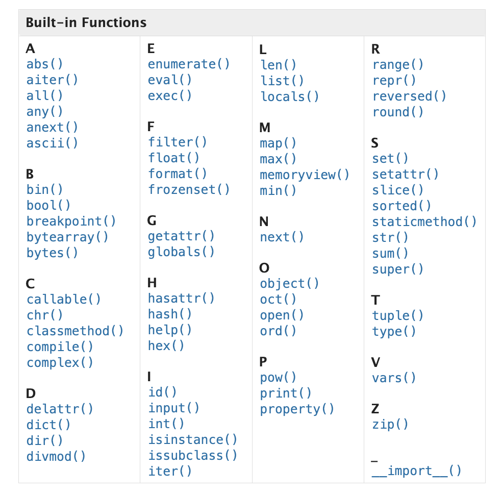
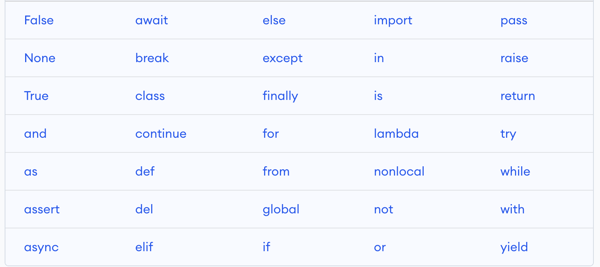

Introduction to Python
Contents
Introduction to Python#
Learning Objectives:
Define the terms computer program, programming language, script, and automation
Use the
print()function to output data to the screenExplain the difference between the
syntaxandsemanticsof a programming languageDefine automation and identify uses for automation
List some of the characteristics of the Python language
Utilize basic Python arithmetic operators to obtain the results of mathematical expressions
What is Python?#
Python is a high-level, interpreted programming language that is designed to be easy to read, write, and maintain. It has a simple and expressive syntax that makes it accessible to beginners, while its vast library of modules and tools make it a popular choice for professional developers.
Python is used in a wide variety of applications, from web development and scientific computing to artificial intelligence and machine learning. Its design philosophy emphasizes code readability, simplicity, and ease of use, which makes it a great choice for projects of any size or complexity.
Syntax#
Having accurate syntax is extremely significant when coding. Even the slightest mistake, such as a missing parentheses or an extra comma, can result in a syntax error, which would prevent the code from running entirely. It’s vital to be attentive to the syntax if the code produces an error or an exception.
However, if the syntax is precise, and the script still displays unexpected behavior or results, the problem could be semantic. It’s important to remember that syntax denotes the rules for constructing code, while semantics relates to the meaning of coded statements. What is the code intended to accomplish? Although it’s possible to have syntactically correct code that runs successfully, it may not perform the desired task.
Semantics#
The semantics of a language associates a meaning with each syntactically correct string of symbols that has no static semantic errors.
In the context of Python, the statement means that for every syntactically correct sequence of code, there is a well-defined meaning associated with it, known as its semantic. This meaning determines the code’s behaviour at runtime and is crucial to programming languages like Python.
For example, the semantics of a function call in Python determines the input arguments it expects, the output it returns, and the side effects it may have.
Program 1#
The code block below outputs the text Hello, world! to the console using the print() function. It then assigns the values 3 and 4 to the variables x and y, respectively, and adds them together to get the sum, which is stored in the variable z. The print() function is used again to output the sum to the console, along with some additional text.
The final print() statement outputs a message to the console, which reads And through my first python code, I say hello to the world!.
print("Hello, world!")
x = 3
y = 4
z = x + y
print('The sum is:',z)
print('And through my first python code, I say hello to the world!')
Hello, world!
The sum is: 7
And through my first python code, I say hello to the world!
When a piece of text is enclosed within quotation marks, it signifies that the text is being defined as a string.
Functions and Keywords#
Functions are blocks of code that can perform a specific task or set of tasks. They are designed to be reusable and modular, and can take input arguments to produce output values.
In the previous example, the print() function was used to display a message on the screen. However, functions can do much more than that. They can manipulate data, perform calculations, and execute complex algorithms. Functions are an essential part of programming, as they help to organize code and make it easier to maintain and reuse.
Here is a list of all the built-in functions available:

In Python, keywords are reserved words that have a specific meaning and purpose in the language. They are used to define the structure of a program, to control the flow of execution, to create variables, and to perform other operations.
Some examples of keywords include if, else, while, for, def, return, True, False, and None. These words cannot be used as variable names or function names because they are already used by the language for specific tasks.
Here is a list of all the keywords:

Arithmetic Operators#
Python can operate with numbers using the usual mathematical operators, and some special operators, too. These are all of them:
a + b = Adds a and b
a - b = Subtracts b from a
a * b = Multiplies a and b
a / b = Divides a by b
a ** b = Elevates a to the power of b. For non integer values of b, this becomes a root (i.e. a**(1/2) is the square root of a)
a // b = The integer part of the integer division of a by b
a % b = The remainder part of the integer division of a by b
first_num = 21
second_num = 3
print(first_num,"+",second_num,"=",first_num+second_num,end="\n\n")
print(first_num,"-",second_num,"=",first_num-second_num,end="\n\n")
print(first_num,"*",second_num,"=",first_num*second_num,end="\n\n")
print(first_num,"/",second_num,"=",first_num/second_num,end="\n\n")
print(first_num,"**",second_num,"=",first_num**second_num,end="\n\n")
print(first_num,"//",second_num,"=",first_num//second_num,end="\n\n")
print(first_num,"%",second_num,"=",first_num%second_num,end="\n\n")
21 + 3 = 24
21 - 3 = 18
21 * 3 = 63
21 / 3 = 7.0
21 ** 3 = 9261
21 // 3 = 7
21 % 3 = 0
The end= key of print function will set the string that needs to be appended when printing is done. By default the end key is set by newline character \n. So after finishing printing all the variables, a newline character is appended.
For the code above, two newline characters \n\n are explicitly added.
Exercises#
Exercise 1
Keeping in mind there are 86400 seconds per day, write a program that calculates how many seconds there are in a week, if a week is 7 days. Print the result on the screen.
Note: Your result should be in the format of just a number, not a sentence.
secs = 86400
days = 7
week_secs = secs * days
print(week_secs)
604800
Exercise 2
Use Python to calculate how many different passwords can be formed with 6 lower case English letters. For a 1 letter password, there would be 26 possibilities. For a 2 letter password, each letter is independent of the other, so there would be 26 times 26 possibilities. Using this information, print the amount of possible passwords that can be formed with 6 letters.
print(26**6)
308915776
Exercise 3
Most hard drives are divided into sectors of 512 bytes each. Our disk has a size of 16 GB. Write a code to calculate how many sectors the disk has.
Note: Your result should be in the format of just a number, not a sentence.
disk_size = 16*1024*1024*1024
sector_size = 512
sector_amount = disk_size/sector_size
print(sector_amount)
33554432.0